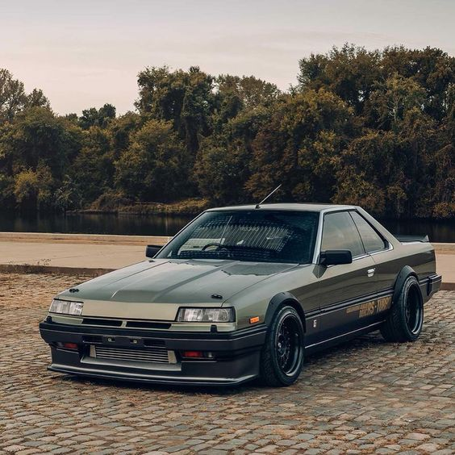
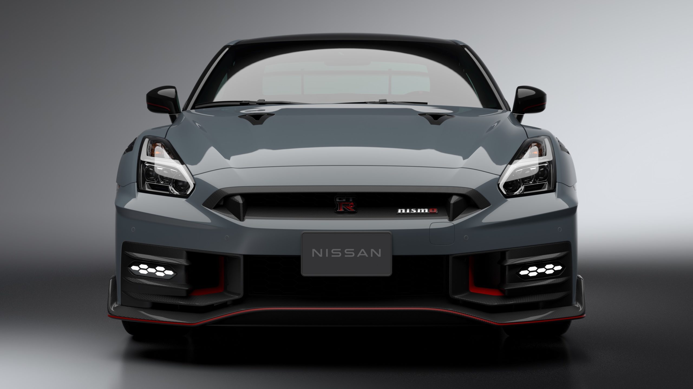

Em 1911, Masujiro Hashimoto fundou a Kwaishinsha Motor Car Works. Três anos depois, em 1914, a empresa lançou seu primeiro automóvel, chamado de DAT. O nome desse novo carro era uma combinação dos nomes dos investidores da empresa: Kenjiro Den, Rokuro Aoyama e Meitaro Takeuchi. Em 1918, a empresa mudou de nome para Kwaishinsha Motorcar Co., Ltd. e, mais tarde, em 1925, foi rebatizada como DAT Jidosha & Co., Ltd. (DAT Motorcar Co.). Além dos automóveis DAT e Datsun, a DAT Motors também fabricava caminhões. Naquela época, a maioria da produção era de caminhões, devido à baixa demanda por automóveis. A partir de 1918, a DAT começou a produzir caminhões para o mercado militar. Ao mesmo tempo, outra empresa, a Jitsuyō Jidōsha Co., Ltd., fabricava pequenos caminhões com peças e materiais importados dos Estados Unidos. Em 1926, a DAT Motors com sede em Tóquio se fundiu com a Osaka Jitsuyo Jidosha Co., Ltd., tornando-se a DAT Jidosha Seizo Co., Ltd. até 1932. Entre 1923 e 1925, a empresa também produziu carros leves e caminhões sob o nome de Lila. Em 1931, a DAT lançou um novo carro menor, o "Datson", que significa "Filho do DAT". No entanto, em 1933, após a Nissan assumir o controle da DAT Motors, a última sílaba de Datson foi alterada para "sol" devido ao significado negativo de "filho" em japonês. Assim, nasceu o nome "Datsun". Finalmente, em 1933, o nome da empresa foi novamente modificado para Jidosha-Seizo Co., Ltd., e a sede foi transferida para Yokohama.
No ano de 1933, o termo "Nissan" fez sua estreia, servindo como uma abreviação da empresa afiliada à holding "Nihon Sangyo" na Bolsa de Valores de Tóquio. Adicionalmente, "Nissan" pode ser interpretada como uma representação de "Indústria Japonesa".
O Nissan GT-R, um superesportivo notável, é produzido pela Nissan. Sua história remonta a 2001, quando foi anunciado como parte da missão de dar continuidade à lendária linhagem GT-R, que teve início na década de 1960 com o icônico Skyline, responsável por conquistar fãs ao redor do mundo. Em 6 de dezembro de 2007, o GT-R teve seu lançamento oficial no Japão, enquanto em 2008, chegou aos Estados Unidos, Canadá e Portugal. Nos demais países, sua estreia ocorreu somente em 2009. O modelo de 2007 é equipado com um impressionante motor 3.8 V6 Biturbo que produz uma potência de 480 CV (362 kW) e um torque de 59,95 Kgfm (588,0 N.m.). Esse motor é acoplado a uma transmissão automatizada de 6 marchas com dupla embreagem e um sistema de tração AWD ATTESA E-TS®. Essa combinação oferece um desempenho extraordinário, permitindo que o GT-R, com seus 1740 Kg, acelere de 0 a 100 km/h em surpreendentes 2,7 segundos, atingindo uma velocidade máxima impressionante de 385 a 395 km/h.
O projeto do Nissan GT-R foi liderado pelo engenheiro japonês Kazutoshi Mizuno, um veterano com mais de 40 anos de experiência em engenharia, com uma carreira que abrangeu desde competições automobilísticas até design de carros. Mizuno e sua equipe tinham como objetivo revolucionar o mercado de supercarros, proporcionando um veículo que atendesse às necessidades dos clientes, ultrapassasse a marca de 300 km/h e, ao mesmo tempo, mantivesse um preço acessível, não ultrapassando os 100 mil dólares. Para tornar isso possível, a Nissan optou por produzir o GT-R em larga escala na sua maior e mais tecnologicamente avançada fábrica em Tochigi, no Japão. A montagem desse supercarro exige uma precisão excepcional, sendo que os únicos componentes montados manualmente são o motor e a transmissão, produzidos em instalações separadas e posteriormente integrados ao GT-R em Tochigi. O GT-R incorpora a cultura japonesa desde seu projeto inicial, com seu design inspirado nos robôs Gundam. Embora o carro aparente ter linhas fortes e robustas, sugerindo uma baixa eficiência aerodinâmica, na realidade, seu coeficiente aerodinâmico é de apenas 0,26. O design do GT-R foi meticulosamente planejado para reduzir o arrasto e os vórtices ao máximo, ao mesmo tempo em que proporciona downforce para aumentar a aderência e a segurança em altas velocidades. Essa abordagem inovadora e equilibrada contribuiu para tornar o Nissan GT-R uma lenda no mundo dos supercarros.

A primeira iteração do Nissan Skyline, conhecida como ALSI-1, entrou em produção em abril de 1957, sob a marca Prince. Na época, esse carro de luxo era uma visão impressionante nas estradas. A ALSI-1 era equipada com um motor padrão de 1,5 litros que gerava 60 cavalos de potência. Para a época, seu desempenho estava em linha com os sedans médios daquele período, atingindo a respeitável velocidade máxima de 140 km/h. Além das versões sedan e station wagon, havia também variantes como a pick-up e um furgão chamados de Prince Skyway.
Em 1958, a Prince realizou uma atualização notável ao adotar quatro faróis, substituindo os anteriores dois, o que levou a uma mudança de nome para ALSI-2. A motorização também passou por melhorias sutis, mantendo a cilindrada de 1,5 litros, mas aumentando a potência para 70 cavalos de potência, resultando em um leve aumento no desempenho.
Em 1961, a linha ganhou uma versão esportiva chamada Skyline Sport, identificada como BLRA-3. Essa versão marcou o início da exploração das capacidades esportivas do modelo. O design da carroceria, projetado por Giovanni Michelotti, estava disponível nas opções coupé e conversível, e introduziu elementos de design icônicos que seriam posteriormente incorporados em gerações futuras, como os faróis trapezoidais. A motorização era de 1,9 litros, produzindo 94 cavalos de potência e proporcionando uma experiência esportiva. A produção da Skyline Sport BLRA-3 foi limitada, tornando-a uma das versões mais valiosas e cobiçadas por colecionadores japoneses.
Versões mais esportivas já estavam disponíveis em 1961, como o Skyline Sport BLRA-3 de 1,9 litros e 94 cv. No entanto, em 1964, a marca lançou um marco significativo: o Skyline 2000 GT, destinado a competições, com o compartimento do motor estendido em 20 cm para acomodar o seis-em-linha de 2,0 litros do modelo Gloria. O sucesso dessa versão levou a Prince a produzi-la em série, oferecendo duas opções para uso nas ruas: o GT-A, com um carburador e 105 cv, e o GT-B, com três carburadores Weber 40, uma alta taxa de compressão, 125 cv e uma caixa de câmbio de 5 velocidades. O nome Skyline já tinha grande significado no Japão quando, em 1972, surgiu a nova geração C110, que incluía os potentes 2000 GT-X (130 cv) e GT-R (160 cv), disponíveis em modelos de duas e quatro portas. A sigla GT-R desapareceu em 1977, com a geração C211, cuja versão de topo, lançada em 1980, era a 2000 GT-ES, equipada com um turbocompressor e 140 cv, atendendo às rigorosas regulamentações de emissões poluentes da época.